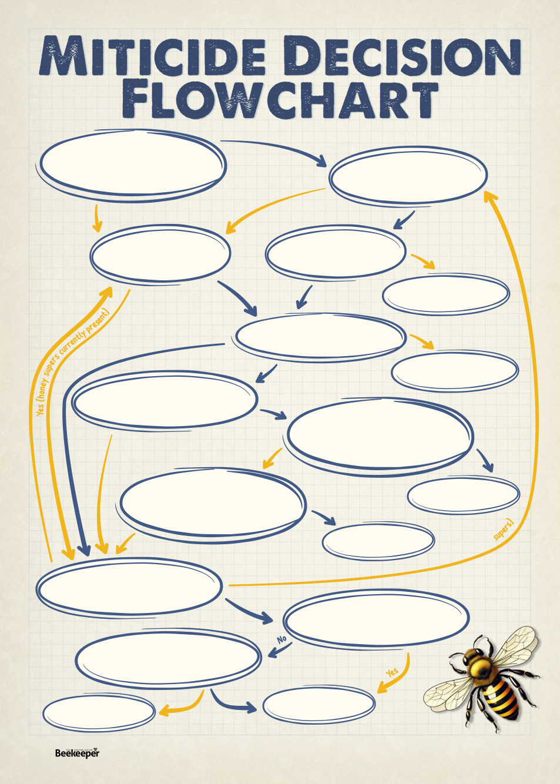

ARTICLE BY
KRIS FRICKE
Are there honey supers on
the hive that can’t be romoved
for treatment
Have you already used Apitraz
twice in the past 12 months? (even
if not pervious treatment)
Have you already used Apivar
in the past 12 months? (even
if not pervious treatment)
Is the temperature between
10°C and 29.5°C
When you last treated,
was it with Apiguard?
Last time you treated, was it with
EITHER Apistan or Bayvarol?
Are you finding mites are becoming
resistant to bayvarol?
Are there honey supers on
the hive that can’t be removed
for treatment
No
No (no honey supers)
No (with honey supers)
Yes
Yes
Yes
Yes
Yes
Last time you treated
was it with Formic Pro?
Last time you treated was it with
EITHER Apivar or Apitraz?
Is the temperature
between 15°C and 40°C
Treat with Apiguard
Treat with Apivar
Treat with Apitraz
Treat with Apistan
Treat with Bayvarol
Treat with Formic Pro
No
No
No
No
No
No
No
No
Yes
Yes
Yes
Yes
(no
ho
n
20 |
Celebrating 125 years | Vol. 126 | No. 02